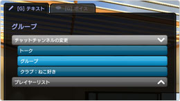
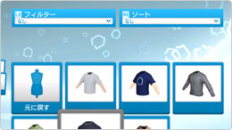
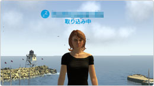

バージョン1.40 アップデート
2010.11.11 バージョン1.40 アップデート詳細を追加しました！
11月11日（木）17時から行われるシステムメンテナンスにおいて、PlayStation®Homeクライアントのバージョンが、v1.36からv1.40にバージョンアップされます。
本バージョンアップでは、ユーザーの皆様から要望が非常に多かった下記項目の他、複数の項目の実装が予定されています。バージョンアップの詳細は、当日にお知らせします。
アップデート概要
- クライアントバージョン： 1.40
- バージョンアップ予定日： 2010.11.11
【注意】
v1.40にバージョンアップする際は、オレンジ色の「HDDアクセスランプ」の点滅が終わるまでお待ちください。「HDDアクセスランプ」の点滅中に、バージョンアップを行うとPS3®が再起動し、バージョンアップが完了できない場合あります。
新機能
- グループ
-
- グループを組むことができるようになりました。最大8人までが一つのグループに参加することができます。
- グループは同時に1つにしか参加することができません。自身でグループを作成した場合、グループを解散するまで他のグループに所属することはできません。
- 同じラウンジにいるプレイヤーやフレンドリストのフレンド、またはオンラインID指定でグループに招待することができます。
- グループのリーダーが、PS Homeからログアウトしない限り、別のラウンジ（インスタンス）やパーソナルスペース、クラブハウスに移動してもグループが解散することはありません。
- ログアウトすると所属グループから抜けます。また、リーダーがグループから抜けると、リーダー権限は自動的にグループの他プレイヤーに移行します。
- グループ内のメンバーすべてがテキスト/ボイスのチャットチャンネルを使うことができます。
- グループに関するリファレンスガイド
- チャット
- 
-
- これまでの通常チャットチャンネルに加え、新たに2つのチャットチャンネルが追加されました。
- トーク
- 誰にでも聞こえる通常のチャットチャンネルです。
自分の周囲のチャットが表示されます。
- グループ
- グループを組んでいると使用できるチャットチャンネルです。PS Homeの中にいる限り、どこにいても全てのグループメンバー間で使うことができます。
- クラブ
- クラブに所属していると使用できるチャットチャンネルです。
PS Homeの中にいる限り、どこにいても全てのクラブメンバー間で使うことができます。
- 【注意】
一度に参加できるクラブチャンネルは一つのみです。複数のクラブに属している場合は、それぞれのチャンネルに切り替えて使う必要があります。
-
- 各チャンネルで使用されるチャットログは文字色が決まっています。
- トーク：白／グループ：薄紫／クラブ：緑
- この変更に伴い、設定したポップアップカラーがチャットログに反映されなくなりました。
- チャットログの上部には「テキスト」と「ボイス」の2種類のタブがあります。テキストタブには、テキストチャットのログが表示され、ボイスタブには、ボイスチャットのダイアログ（ボイスチャット使用中等）が表示されます。
- チャットログを開いた状態で、方向キーの左右で「テキスト」⇔「ボイス」を切り替えることができます。
- 標準のメニューオプションに加え、スラッシュコマンドを使ってチャンネルを切り替えることができます。
- /t または /T： トークチャンネルに切り換える
- /g または /G： グループチャンネルに切り換える
- /c または /C： クラブチャンネルに切り換える
また、コマンドの後に半角スペースを空けて文章を入力することもできます。
- 例： /c クラブチャンネルに話しかけます
- プライベートメッセージを送ることができるようになりました。アバターをターゲットしてポップアップメニューを表示させるか、チャットウィンドウでプレイヤーを選択するかし、「プライベートメッセージを送る」から送ることができます。
また、スラッシュコマンドでも送ることができます。
- /p 相手の名前 文章
- 例： /p PlayerAAA コメント
- PlayerAAAさんにプライベートメッセージ「コメント」を送ります
/p は、
/P、/pm、/private、/privatemessage に変更して使用することもできます。
- チャットチャンネルに関するリファレンスガイド
- アバター及びプライベートラウンジのカスタマイズ画面
-
- アバターのカスタマイズ画面の背景がシンプルになりました。これにより、以前よりも速くアイテムや情報のロードができるようになりました。
- アバター及びプライベートラウンジのカスタマイズ画面で「お気に入り」を設定することができるようになりました。
- アバター及びプライベートラウンジのカスタマイズ画面でフィルターをかけることができるようになりました。「お気に入り」/「購入アイテム」/「ホームリワード」/「最近手に入れたアイテム」をそれぞれ表示させることができます。
- 
-
- アバター及びプライベートラウンジのカスタマイズ画面のそれぞれのカテゴリでは、「新しい順」/「古い順」/「最近使用した順」でソートをかけることができるようになりました。
- アイテムを新たに入手すると、カテゴリとアイテムに「星」のアイコンがつくようになりました。
- アドバンスド家具には、「◎」のアイコンがつくようになりました。
- アイテムを収納できる「倉庫」カテゴリができました。アイテムを倉庫に収納することにより、アバター及びプライベートラウンジのカスタマイズ画面のロードが速くなり、カテゴリ内でのスクロールの回数を少なくすることができます。「倉庫」に移動したアイテムは、いつでも元に戻すことができます。
- アバター及びプライベートラウンジのカスタマイズ画面で使用できるアイテム数の上限が500に変更されました。500以上になると、自動的に「倉庫」へ送られます。※1
- 「倉庫」の情報はセーブデータに保存されます。
- アバターのカスタマイズ画面のカテゴリに「両耳」カテゴリが追加されました。
- プライベートラウンジのカスタマイズ画面の「額」カテゴリの名称が、「額・壁掛け装飾」に変更されました。
- 各カテゴリ内では、最後に選択したアイテムにフォーカスが当たるようになりました。
- アバターカスマイズのプリセット１から６が変更されました。
※1バージョンアップ後、最初にPS Homeにログインする際に、アイテムを500以上持っている場合は、一旦全てのアイテムが倉庫に送られ、使用中のアイテム、購入済みアイテム、ホームリワードの順に500個になるまで戻されます。
- アバターステータス
- 
-
- アバターにステータスを設定できるようになりました。ステータスを設定すると、表情や立っている時のアニメーションに変化が起るものもあります。
- 設定可能なステータス
- なし/楽しい/悲しい/怒っている/分からない/取り込み中/助けて欲しい/チャットがしたい/ゲームがしたい
改善点
- メニューパッドとナビゲーター
-
- メニューパッドで最初に表示される画面がシンプルモードになりました。
最初の画面では、「ナビゲーター」/「アバターのカスタマイズ」/「メニュー」が表示されます。
- 既存のメニューは全て「メニュー」の中に入っています。
- シンプルモードの画面は、「設定」でオフにすることができます。
- メニューパッドを使用しなくても、STARTボタンを長押しすることによって直接ナビゲーター画面に移動できるようになりました。
- ナビゲーター上のラウンジ画面の左上に、お気に入りアイコンが表示されるようになりました。また、フレンドがいるラウンジには、アバター画像が表示されるようになりました。
- ナビゲーター画面にショップアイコンが追加されました。各ショップアイコンから直接アイテムを購入できるようになりました。
- アバターラベル
-
- アバターラベル（オンラインID/ステータス/アイコン）の設定（オン/オフ）ができるようになりました。メニューパッド及びセキュリティオプションから設定画面を開くことができます。
※ オフにしても自分の画面上から見えなくなるだけで他のアバターからは表示されたままとなります。
※ セキュリティオプションからは現在使用することができません。
- フレンド招待
-
- フレンドリストでオンライン状態になっているフレンドに、メニューパッドかナビゲーターのフレンドリストから招待を行うことができるようになりました。
- 招待を承認すると、自動的にPS Homeが起動し、招待された場所へ移動します。
- ロード画面
-
- ラウンジのロード画面がシンプルになり、ロード中にヒントが表示されるようになりました。
- その他
-
- PS Homeへのログインについて、パレンタルコントロールのレベルによっても制限されるようになりました。
- オーディオシステムが最適化されました。
- ドルビー5.1サラウンドサウンドが適切にサポートされるようになりました。
- グラフィックエンジンが変更されました。
※ これにより、一部アイテムの色味（特に髪型）が変わっている場合があります。
- ポーランド語のフォントサポートが追加されました。
- アイテムが突き抜けたり、ラウンジから飛び出したりしまわないよう、カメラのコリジョンが改善されました。
- ログイン時にかかる時間が若干改善されました。
- イスやソファなどに座った状態で、スクリーンをズームできるようになりました。
- パーソナルスペース（ベーシック）のシャドウとライティングが改善されました。
- パーソナルスペース（ベーシック）の入り口近くにあるライトがオン/オフできるようになりました。
既知の不具合
-
- ログインを行った際、500未満であっても倉庫にアイテムが送られたり、新規アイテムが倉庫に送られたりしてしまう場合があります。アイテムが見つからない場合は、まず倉庫の該当カテゴリをご確認ください。